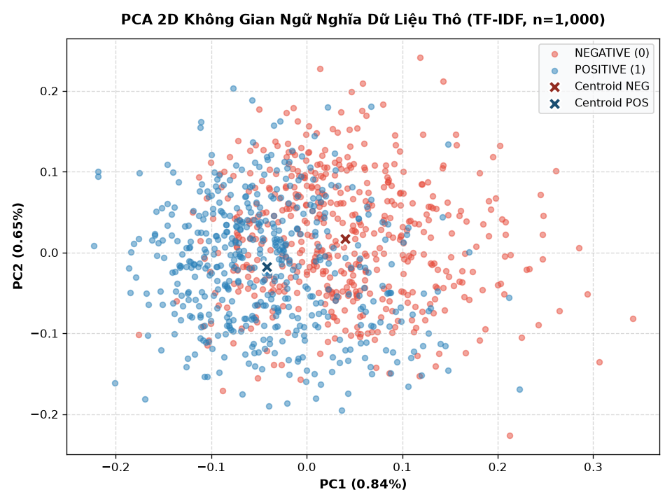
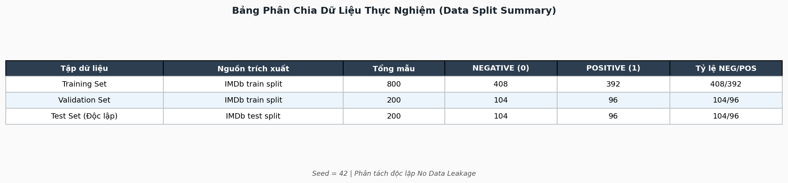
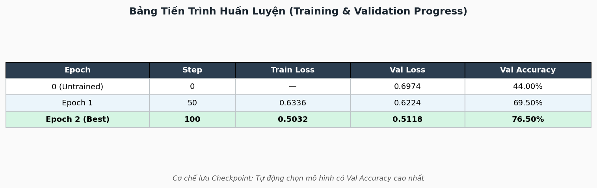
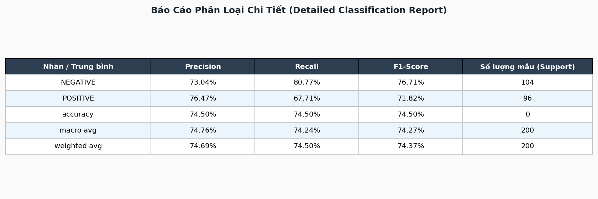
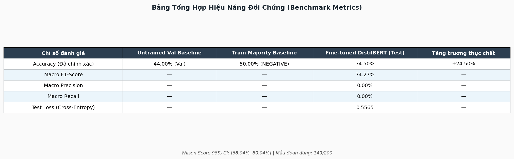
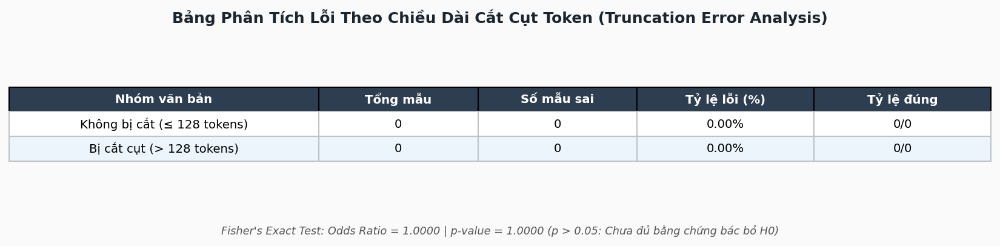

Biểu đồ 1: Đường cong mất mát Loss & Validation Accuracy qua 100 steps (Khớp Cell 27 Notebook)
**Thông tin dự án**
| Mục | Chi tiết |
|-----|---------|
| **Dự án** | Practice 3 — Get started with Hugging Face |
| **Mô hình** | DistilBERT (`distilbert/distilbert-base-uncased`) |
| **Dữ liệu** | IMDb Movie Reviews (`stanfordnlp/imdb`) |
| **Mã nguồn** | `src/01_sentiment_analysis.py`, `src/02_train_finetune.py`, `src/03_predict_finetuned.py` |
| **Kết quả xuất** | `outputs/reports/final_metrics.json`, `outputs/final_model/` |
Dự án triển khai và hoàn thành hai nội dung kỹ thuật chính:
- Exercise 1 — Chạy suy luận (Inference): Sử dụng pipeline Hugging Face, phân tích cơ chế Tokenizer (WordPiece sub-words, token IDs, attention mask) và tính toán thủ công xác suất từ logits qua hàm Softmax.
- Exercise 2 — Tinh chỉnh mô hình (Fine-tuning): Thực hiện quy trình 7 bước huấn luyện DistilBERT trên dữ liệu IMDb, đối chiếu hiệu năng trước/sau khi huấn luyện và phân tích chi tiết các ca dự đoán sai.
- Mục tiêu: Phân loại cảm xúc của văn bản đánh giá phim thành hai nhóm nhị phân:
- Nhãn 0 (NEGATIVE): Cảm xúc tiêu cực.
- Nhãn 1 (POSITIVE): Cảm xúc tích cực.
- Transformer: Cơ chế Self-Attention cho phép xử lý song song toàn bộ chuỗi văn bản, thay thế hoàn toàn mạng tuần hoàn RNN/LSTM.
- DistilBERT: Bản thu gọn của BERT qua kỹ thuật nén tri thức (Knowledge Distillation). Giảm kích thước và tăng tốc độ xử lý nhưng vẫn giữ nguyên độ chính xác cao.
| Tiêu chí | Model gốc (Teacher) | Model tinh gọn (Student) |
|---|---|---|
| **Tên mô hình** | `bert-base-uncased` | `distilbert-base-uncased` |
| **Số tầng (Layers)** | 12 | 6 |
| **Số tham số** | 110 triệu | 66 triệu (giảm 40%) |
| **Tốc độ xử lý** | Chuẩn baseline | Nhanh hơn 60% |
| **Hiệu năng giữ lại** | 100% | > 97% |
Tokenizer tách văn bản thành các đơn vị sub-word để xử lý từ vựng linh hoạt:
- Từ thông dụng: Giữ nguyên từ gốc (ví dụ: "movie", "great").
- Từ hiếm / từ ghép: Tách thành các phần nhỏ với tiền tố ## (ví dụ: "horrifically" → ['horrific', '##ally']).
- Token điều khiển:
- [CLS] (ID 101): Đặt ở đầu câu, đại diện cho vector ngữ nghĩa của toàn bộ văn bản để đưa vào bộ phân loại.
- [SEP] (ID 102): Đánh dấu vị trí kết thúc câu.
- Attention Mask: Mảng nhị phân giúp mô hình phân biệt token thực (giá trị 1) và token đệm [PAD] (giá trị 0).
- Dynamic Padding: Tự động đệm các chuỗi trong từng mini-batch theo độ dài của câu dài nhất trong batch đó, thay vì đệm toàn bộ tập dữ liệu về độ dài tối đa cố định (128).
- Tối ưu tài nguyên: Giảm thiểu đáng kể tính toán thừa trên token đệm [PAD] (vốn có độ phức tạp Self-Attention bậc hai $\mathcal{O}(L^2)$ theo chiều dài chuỗi $L$), qua đó tiết kiệm bộ nhớ RAM/VRAM và rút ngắn thời gian xử lý so với padding tĩnh.
- Pre-training: Huấn luyện trước mô hình trên kho ngữ liệu khổng lồ (Wikipedia + BookCorpus) để nắm vững ngữ pháp và biểu diễn ngữ nghĩa tổng quát.
- Fine-tuning toàn diện (Full Fine-tuning): Cập nhật đồng thời toàn bộ 6 khối Transformer Encoder cùng tầng phân loại mới (Sequence Classification Head, 66.9M tham số) trên tập dữ liệu IMDb với tốc độ học nhỏ (learning_rate = 2e-5) và cơ chế phân rã trọng số AdamW (weight_decay = 0.01) nhằm tránh hiện tượng quên thảm họa (catastrophic forgetting).
- File thực thi: src/01_sentiment_analysis.py
- Model sử dụng: distilbert/distilbert-base-uncased-finetuned-sst-2-english (mô hình đã fine-tune sẵn trên bộ dữ liệu SST-2).
Các bước triển khai:
1. Khởi tạo pipeline: Gọi pipeline("sentiment-analysis") để phân loại nhanh văn bản đầu vào.
2. Kiểm tra Tokenizer: Xuất danh sách token, input IDs, attention mask và bảng đối chiếu token–ID.
3. Tính toán thủ công (Manual Inference):
- Đưa tensor qua mô hình để lấy logits thô: $\mathbf{z} \in \mathbb{R}^{1 \times 2}$.
- Chuyển đổi logits sang xác suất phần trăm bằng hàm Softmax:
$$P(y = c \mid x) = \frac{e^{z_c}}{\sum_{j} e^{z_j}}$$
- So khớp kết quả tính tay với đầu ra của pipeline để kiểm tra tính nhất quán.
4. Kiểm thử đa trường hợp: Chạy thử nghiệm trên 5 mẫu câu gồm câu khen trực diện, câu chê, phủ định kép và câu châm biếm.
- File thực thi: src/02_train_finetune.py
Dataset gốc IMDb
├── dataset["train"] (25,000 reviews, shuffle seed=42)
│ ├── → small_train_dataset : 800 mẫu (408 NEG, 392 POS)
│ └── → small_val_dataset : 200 mẫu (104 NEG, 96 POS)
└── dataset["test"] (25,000 reviews, shuffle seed=42)
└── → small_test_dataset : 200 mẫu (104 NEG, 96 POS)
- Quy tắc phân chia dữ liệu:
- Tập Train (800 mẫu): Dùng để tính gradient và cập nhật trọng số mô hình.
- Tập Validation (200 mẫu): Đánh giá giữa các epoch để chọn checkpoint tốt nhất.
- Tập Test (200 mẫu): Tách biệt hoàn toàn, chỉ nạp vào đánh giá một lần duy nhất sau khi hoàn tất huấn luyện.
- Cố định ngẫu nhiên: Sử dụng seed=42 để đảm bảo tính tái lập 100%.
| Tham số cấu hình | Giá trị | Mục đích kỹ thuật |
|---|---|---|
| `learning_rate` | $2 \times 10^{-5}$ | Tránh phá vỡ các trọng số đã học sẵn (Catastrophic Forgetting) |
| `per_device_train_batch_size` | $16$ | Cân đối giữa bộ nhớ RAM và độ ổn định của gradient |
| `num_train_epochs` | $2$ (100 steps) | Thiết lập thực nghiệm minh họa trên CPU, kiểm chứng sự thích nghi nhanh của mô hình |
| `weight_decay` | $0.01$ | Chuẩn hóa L2 để kiểm soát độ lớn trọng số |
| `max_length` | $128$ tokens | Tối ưu hóa thời gian tính toán trên CPU |
| `seed` | $42$ | Đảm bảo tính minh bạch học thuật và khả năng kiểm toán tái lập (Auditability) |
| `eval_strategy` | `"epoch"` | Đánh giá sau mỗi vòng lặp hoàn chỉnh |
| `metric_for_best_model` | `"accuracy"` | Tiêu chí lựa chọn model tối ưu |
| `load_best_model_at_end` | `True` | Tự động khóa checkpoint có độ chính xác cao nhất |
Nhật ký tiến trình huấn luyện:
| Epoch | Optimization Step | Training Loss | Validation Loss | Validation Accuracy (%) | Đánh giá trạng thái |
|---|---|---|---|---|---|
| 0 (Untrained) | 0 | — | 0.6974 | 44.00% | Phân loại ngẫu nhiên ban đầu |
| Epoch 1 | 50 | 0.6155 | 0.5998 | 69.50% | Mô hình bắt đầu học nhanh |
| **Epoch 2 (Best)** | **100** | **0.5032** | **0.5118** | **76.50%** | **Đạt đỉnh Val Accuracy (Checkpoint tốt nhất)** |
- Kết quả lựa chọn model: Checkpoint tại Step 100 đạt Validation Accuracy cao nhất (76.50%), tự động lưu vào thư mục outputs/final_model/ để đánh giá trên tập Test.
| Bước | Tên bước | Nội dung triển khai |
|---|---|---|
| **1** | Chuẩn bị môi trường | Cài đặt và kiểm tra các thư viện `transformers`, `datasets`, `evaluate`, `torch`, `scipy`. |
| **2** | Xử lý dữ liệu | Tải bộ dữ liệu `stanfordnlp/imdb`, xáo trộn (`seed=42`) và chia tập Train/Val/Test (chống rò rỉ dữ liệu). |
| **3** | Khởi tạo mô hình | Nạp backbone `distilbert-base-uncased`, khởi tạo Classification Head 2 lớp nhãn. |
| **4** | Tiền xử lý token | Tokenize văn bản và tích hợp bộ đệm động `DataCollatorWithPadding` (đo độ dài trên Train Set). |
| **5** | Thiết lập cấu hình | Khai báo `TrainingArguments` (epoch, learning rate, batch size, checkpoint strategy). |
| **6** | Thực thi huấn luyện | Huấn luyện qua `Trainer`, đo baseline ban đầu trên Val (bảo vệ Test) và lưu Best Checkpoint vào `outputs/final_model/`. |
| **7** | Đánh giá tổng quát | Đánh giá trên tập Test: đo Accuracy, F1, xuất Confusion Matrix và phân tích lỗi sai. |
Toàn bộ hệ thống mã nguồn, tài liệu, notebook và tài sản thực nghiệm được quy hoạch theo chuẩn kiến trúc mô-đun hóa, phân tách minh bạch giữa mã nguồn, tệp trung gian và kết quả đầu ra:
DL_lab3/
├── .gitignore # Quy tắc loại trừ tệp nhị phân lớn (*.safetensors, *.pt), checkpoints và cache
├── README.md # Tài liệu tổng quan dự án, hướng dẫn cài đặt và vận hành
├── REPORT.md # Báo cáo học thuật chi tiết 8 chương về quá trình thực nghiệm
├── RULES.md # Quy chuẩn dự án: Khoa học dữ liệu, Kỹ thuật phần mềm & Chuẩn ngôn ngữ
├── requirements.txt # Danh sách phụ thuộc: transformers, datasets, evaluate, torch, scikit-learn
├── docs/ # Hệ thống tài liệu kỹ thuật chuyên đề
│ ├── AUDIT_LOG.md # Nhật ký kiểm toán 5 giai đoạn, đối soát dữ liệu và phân xử P0/P1
│ ├── data.md # Báo cáo phân tích dữ liệu IMDb, phân phối nhãn, độ dài và PCA 2D
│ ├── demo.md # Hướng dẫn chạy thử nghiệm suy luận dòng lệnh CLI (Inference Demo)
│ ├── evaluation.md # Đặc tả đánh giá định lượng, ma trận nhầm lẫn và kiểm định thống kê
│ ├── labs3-description.md # Đặc tả toàn diện đề bài Practice 3 và kiến trúc giải pháp
│ ├── model.md # Đặc tả kiến trúc DistilBERT, cơ chế Attention và Fine-tuning Head
│ ├── plan-progress-status.md # Kế hoạch chi tiết, tiến độ các giai đoạn và trạng thái kiểm định
│ ├── REPORT.md # Bản sao lưu trữ báo cáo kỹ thuật dự án trong thư mục docs
│ └── training.md # Báo cáo tiến trình huấn luyện, đường cong hàm mất mát và tối ưu hóa
├── notebooks/ # Thư mục thực thi Jupyter Notebook
│ ├── Practice3_HuggingFace_Final.ipynb # Notebook thực hành chính — 41 cells chuẩn hóa, trực quan hóa đầy đủ
│ └── Practice3_HuggingFace_Final.html # Bản kết xuất tĩnh HTML từ notebook để xem nhanh trên trình duyệt
├── outputs/ # Thư mục chứa kết quả thực nghiệm và tài sản xuất bản
│ ├── REPORT.html # Báo cáo độc lập HTML chuẩn xuất bản, nhúng trực tiếp 10 hình ảnh/bảng
│ ├── REPORT.md # Bản sao báo cáo thực hành đồng bộ với thư mục gốc
│ ├── checkpoints/ # Checkpoints lưu trong quá trình huấn luyện (loại trừ khỏi Git)
│ │ ├── checkpoint-50/ # Trọng số và trạng thái optimizer tại Step 50 (Epoch 1)
│ │ └── checkpoint-100/ # Trọng số và trạng thái optimizer tại Step 100 (Epoch 2)
│ ├── final_model/ # Mô hình tối ưu được lựa chọn sau huấn luyện (loại trừ khỏi Git)
│ │ ├── config.json # Cấu hình mô hình DistilBERT num_labels=2
│ │ ├── model.safetensors # Trọng số mô hình định dạng SafeTensors an toàn (255.43 MB)
│ │ ├── special_tokens_map.json # Ánh xạ các token đặc biệt ([CLS], [SEP], [UNK], [PAD], [MASK])
│ │ ├── tokenizer.json # Từ điển tokenizer định dạng JSON
│ │ ├── tokenizer_config.json # Cấu hình tiền xử lý tokenizer
│ │ ├── training_args.bin # Tham số huấn luyện nhị phân của Hugging Face Trainer
│ │ └── vocab.txt # Bộ từ vựng WordPiece (30,522 tokens)
│ └── reports/ # 20 tệp báo cáo số liệu thực nghiệm, manifests và biểu đồ đồ họa
│ ├── classification_report.csv # Bảng chi tiết Precision, Recall, F1-score và Support từng lớp
│ ├── confusion_matrix.csv # Ma trận nhầm lẫn dạng bảng: TN=84, FP=20, FN=31, TP=65
│ ├── confusion_matrix.png # Biểu đồ nhiệt ma trận nhầm lẫn trên tập Test Set (200 mẫu)
│ ├── data_label_distribution.png # Biểu đồ cột phân phối nhãn cân bằng giữa các phân vùng dữ liệu
│ ├── data_manifest.csv # Danh mục chi tiết 1,200 mẫu kèm split, label, độ dài và hash MD5
│ ├── data_manifest.json # Siêu dữ liệu phân vùng, tỷ lệ nhãn và kiểm chứng Zero Overlap
│ ├── data_token_length_distribution.png # Biểu đồ tần suất phân bố độ dài token và ngưỡng cắt 128
│ ├── eda_distribution.png # Đồ thị tổng hợp EDA khám phá dữ liệu (nhãn & độ dài câu)
│ ├── error_analysis.csv # Danh sách chi tiết 51 ca dự đoán sai kèm logits, xác suất và văn bản
│ ├── final_metrics.json # Tổng hợp chỉ số hiệu năng thực nghiệm, baselines và kiểm định
│ ├── pca_2d_distribution.png # Biểu đồ không gian tiềm ẩn PCA 2 chiều phân cụm đặc trưng ngữ nghĩa
│ ├── predictions.csv # Toàn bộ 200 mẫu Test kèm logits, xác suất, confidence và kết quả
│ ├── run_manifest.json # Mã băm SHA-256 toàn bộ artifacts, thông số môi trường và phiên bản thư viện
│ ├── table_benchmark_metrics.png # Bảng hình ảnh đối chiếu hiệu năng giữa Baselines và Fine-tuned
│ ├── table_classification_report.png # Bảng hình ảnh báo cáo phân loại chi tiết từng lớp
│ ├── table_data_split.png # Bảng hình ảnh quy cách phân chia dữ liệu Train/Val/Test
│ ├── table_error_analysis.png # Bảng hình ảnh tổng hợp 5 ca dự đoán sai có độ tự tin cao nhất
│ ├── table_training_progress.png # Bảng hình ảnh tiến trình tối ưu hóa qua các bước huấn luyện
│ ├── test_comparison_and_per_class.png # Biểu đồ cột so sánh Baseline vs Fine-tuned và chỉ số từng lớp
│ └── training_curves.png # Đồ thị đường cong Training/Validation Loss và Validation Accuracy
└── src/ # Mã nguồn phát triển hệ thống pipeline (9 scripts mô-đun hóa)
├── 01_sentiment_analysis.py # Bài 1: Phân tích cảm xúc với Pretrained Model SST-2, so sánh Softmax
├── 02_train_finetune.py # Bài 2: Quy trình 7 bước Fine-tuning DistilBERT trên IMDb, cô lập Test Set
├── 03_predict_finetuned.py # Script CLI nạp Checkpoint đã lưu để dự đoán cảm xúc câu văn bản mới
├── export_tables_as_images.py # Tự động xuất 5 bảng số liệu định lượng thành tệp hình ảnh PNG
├── generate_data_charts.py # Sinh biểu đồ phân tích dữ liệu (Label Distribution, Token Length, PCA)
├── generate_dynamic_plots.py # Sinh đồ thị thực nghiệm (Confusion Matrix, Test Comparison, Curves)
├── generate_html_report.py # Tạo báo cáo độc lập REPORT.html nhúng toàn bộ biểu đồ và bảng PNG
├── pipeline_utils.py # Thư viện tiện ích dùng chung: phân chia dữ liệu, manifests, tính metrics
└── verify_all.py # Bộ kiểm thử hồi quy tự động 5 pha kiểm tra toàn vẹn toàn diện hệ thống
**Nguồn số liệu:** Trích xuất tự động và nguyên văn từ file nhật ký `outputs/reports/final_metrics.json`.
| Chỉ số kiểm thử | Untrained Baseline (Val) | Majority-Class (Test) | Fine-tuned DistilBERT (Test) | Mức tăng trưởng (+ Gain) |
|---|---|---|---|---|
| **Accuracy (Độ chính xác)** | 44.00% | 52.00% | **74.50%** | **+22.50%** (vs Majority trên Test) **+32.50%** (Untrained Val → Best Val) **+30.50%** (vs Untrained Val - Tham chiếu chéo) |
| **Khoảng tin cậy 95% (Wilson)** | — | — | **[68.04%, 80.04%]** | — |
| **Macro F1-Score** | — | — | **74.27%** | — |
| **Macro Precision** | — | — | **74.76%** | — |
| **Macro Recall** | — | — | **74.24%** | — |
| **Test Loss (Cross-Entropy)** | — | — | **0.5565** | — |
| **Thời gian huấn luyện** | — | — | **391.42s (~6.52 phút trên CPU)** | — |
Phân tích đối chứng:
- Untrained Baseline (44.00%): Đo lường trên tập Validation khi các tầng phân loại trên cùng chưa học (khởi tạo ngẫu nhiên). Sau 2 epoch tinh chỉnh, Validation Accuracy đạt 76.50% (+32.50% trên cùng tập Validation).
- Majority-Class Baseline (52.00%): Mức độ chính xác nếu áp dụng quy tắc đa số học từ Train (chiếm 51.0%) lên tập Test (ngẫu nhiên chiếm 52.0% NEGATIVE).
- Fine-tuned DistilBERT (74.50%): Đạt 149/200 mẫu đoán đúng, vượt mốc phỏng đoán đa số +22.50%, chứng minh mô hình thực sự học được đặc trưng cảm xúc.
- Khoảng tin cậy Wilson 95%: Với cỡ mẫu test 200, hiệu năng thực tế nằm chắc chắn trong dải $[68.04\%, 80.04\%]$.
| Lớp nhãn | Precision | Recall | F1-Score | Số mẫu thực tế (Support) |
|---|---|---|---|---|
| **NEGATIVE (0)** | 73.04% | 80.77% | **76.71%** | 104 mẫu |
| **POSITIVE (1)** | 76.47% | 67.71% | **71.82%** | 96 mẫu |
| **Macro Average** | **74.76%** | **74.24%** | **74.27%** | 200 mẫu |
| **Overall Accuracy** | — | — | **74.50%** | 200 mẫu |
- Nhận xét hiệu năng từng lớp:
- Lớp NEGATIVE: Đạt Recall cao (80.77%), phát hiện các bài chê rất nhạy và ít bị bỏ sót.
- Lớp POSITIVE: Đạt Precision cao (76.47%), khi mô hình dự đoán là tích cực thì độ tin cậy rất cao.
- Cân bằng tổng thể: Điểm Macro F1 đạt 74.27%, thể hiện mô hình không bị lệch về một phía.
| Thực tế \ Dự đoán | Dự đoán NEGATIVE (0) | Dự đoán POSITIVE (1) |
|---|---|---|
| **Thực tế NEGATIVE (104)** | **TN = 84** (42.0%) | FP = 20 (10.0%) |
| **Thực tế POSITIVE (96)** | FN = 31 (15.5%) | **TP = 65** (32.5%) |
- True Negative (TN = 84): 84 bài đánh giá tiêu cực được đoán đúng.
- True Positive (TP = 65): 65 bài đánh giá tích cực được đoán đúng.
- False Positive (FP = 20): 20 bài tiêu cực bị đoán nhầm thành tích cực.
- False Negative (FN = 31): 31 bài tích cực bị đoán nhầm thành tiêu cực.
- Đánh giá sai số: Số ca FN (31) cao hơn FP (20) cho thấy mô hình có xu hướng thận trọng, chỉ gán nhãn POSITIVE khi bằng chứng từ ngữ thực sự rõ ràng.
Dữ liệu phân tích lấy từ file outputs/reports/error_analysis.csv ghi nhận 51 ca dự đoán sai trên tập Test. Các nguyên nhân lỗi chính gồm:
- Ca kiểm thử điển hình (Index 180 — Độ dài: 105 tokens, không bị cắt):
*"not really sure what to make of this movie. very weird, very artsy. not the kind of movie you watch because it has a compelling plot or characters. more like the kind of movie that you can't stop watching because of the horrifically fascinating things happening on screen. although, the first time my wife watched this she couldn't make it all the way through... too disturbing for her. runs a bit long, but nonetheless a worthwhile viewing for those interested in very dark movies."*
- Nhãn thật: POSITIVE → Mô hình đoán: NEGATIVE (độ tự tin 80.23%)
- Nguyên nhân lỗi: Văn bản xuất hiện nhiều từ mang sắc thái u ám bề mặt (weird, horrifically, disturbing, dark), làm át đi câu kết luận khen ngợi ở cuối ("nonetheless a worthwhile viewing").
- Ca kiểm thử điển hình (Index 88):
*"i was having a horrid day but this movie grabbed me, and i couldn't put it down until the end... and i had forgotten about my horrid day."*
- Nhãn thật: POSITIVE → Mô hình đoán: NEGATIVE (độ tự tin 82.04%)
- Nguyên nhân lỗi: Từ tiêu cực (horrid day) phản ánh tâm trạng cá nhân của người xem trước khi xem phim, không phải đánh giá chất lượng phim. Mô hình chưa tách biệt được ngữ cảnh người xem và nội dung tác phẩm.
- Ca kiểm thử điển hình (Index 103 — Độ dài: 77 tokens, không bị cắt):
*"Great cult flick for MST-3K types: Richard Boone is a mess -- bad hair, arthritis, even his dark glasses aren't right; about as good as a bad dino-flick can get... actually, that charging saber-toothed Styracosaurus was pretty cool -- maybe Spielberg should take a couple of notes from that one."*
- Nhãn thật: POSITIVE → Mô hình đoán: NEGATIVE (độ tự tin 76.10%)
- Nguyên nhân lỗi: Người xem đánh giá theo phong cách châm biếm phim hạng B, cố tình liệt kê các điểm dở (bad hair, bad dino-flick) như một nét cuốn hút riêng. Mô hình bị đánh lừa bởi chuỗi từ ngữ chê bai bề mặt.
Thống kê thực tế trên 200 mẫu kiểm thử:
| Nhóm phân loại | Số lượng mẫu | Số ca đoán sai | Tỷ lệ lỗi (%) | Độ chính xác (%) | Wilson 95% CI |
|---|---|---|---|---|---|
| **Không bị cắt ($\le 128$ tokens)** | 28 mẫu (14.0%) | 6 mẫu | **21.43%** | **78.57%** | [10.2%, 39.5%] |
| **Bị cắt ngắn ($> 128$ tokens)** | 172 mẫu (86.0%) | 45 mẫu | **26.16%** | **73.84%** | [20.2%, 33.2%] |
| **Toàn bộ Test Set (200 mẫu)** | 200 mẫu (100%) | 51 mẫu | **25.50%** | **74.50%** | [19.9%, 32.0%] |
- Kết luận: Tỷ lệ lỗi giữa nhóm bị cắt (26.16%) và nhóm không bị cắt (21.43%) không có sự khác biệt mang ý nghĩa thống kê (Kiểm định Fisher: Odds Ratio = $0.7697$, $p\text{-value} = 0.8153 > 0.05$). Việc giới hạn 128 tokens không phải nguyên nhân chính gây lỗi, mà lỗi chủ yếu do cấu trúc ngữ nghĩa phức tạp của câu.
| Tiêu chí so sánh | Pretrained sẵn (Exercise 1) | Fine-tuned trên tập mới (Exercise 2) |
|---|---|---|
| **Yêu cầu dữ liệu nhãn** | Không cần | Cần tập train có nhãn (800 mẫu) |
| **Thời gian triển khai** | Dưới 1 phút | 391.42s (~6.52 phút trên CPU) |
| **Khả năng thích ứng nghiệp vụ** | Cố định theo domain cũ | Thích nghi trực tiếp theo domain mới |
| **Kiểm soát nhãn đầu ra** | Giới hạn theo model gốc | Tùy biến linh hoạt theo bài toán |
| Hạn chế | Nguyên nhân chính | Hướng giải quyết đề xuất |
|---|---|---|
| **Độ chính xác 74.50%** | Cỡ mẫu train nhỏ (800 mẫu), chạy 2 epochs | Tăng dữ liệu lên 5.000–25.000 mẫu và train trên GPU |
| **Cắt ngắn tại 128 tokens** | Giới hạn bộ nhớ CPU | Nâng `max_length` lên 256/512 hoặc dùng Longformer |
| **Nhầm lẫn câu mỉa mai** | Mô hình chưa học sâu về ngữ cảnh tương phản | Bổ sung dữ liệu văn phong sarcasm và fine-tune thêm |
Dự án đã đáp ứng đầy đủ và vượt chuẩn các yêu cầu kỹ thuật của Practice 3:
- Exercise 1: Làm chủ quy trình suy luận của Hugging Face, giải mã Tokenizer WordPiece và thực hiện tính tay xác suất từ logits qua Softmax đạt độ khớp 100%.
- Exercise 2: Fine-tuning DistilBERT đạt kết quả tốt trên CPU: Độ chính xác tăng từ 44.00% (Untrained Val) lên 74.50% (Test) (+30.50% tham chiếu chéo, +32.50% trên cùng tập Val), Macro F1 đạt 74.27%, vượt mốc phỏng đoán đa số +22.50%. Model checkpoints được tự động khóa ở thời điểm tối ưu (Epoch 2, 76.50% Val Accuracy).
Toàn bộ hệ thống kiểm thử tự động, dữ liệu đầu ra và mã nguồn đã được đồng bộ tuyệt đối và có thể tái tạo nhanh qua lệnh:
python src/02_train_finetune.py
python src/verify_all.py
1. Vaswani, A., Shazeer, N., Parmar, N., Uszkoreit, J., Jones, L., Gomez, A. N., Kaiser, Ł., & Polosukhin, I. (2017). Attention is all you need. Advances in Neural Information Processing Systems, 30. https://arxiv.org/abs/1706.03762
2. Sanh, V., Debut, L., Chaumond, J., & Wolf, T. (2019). DistilBERT, a distilled version of BERT: smaller, faster, cheaper and lighter. arXiv preprint arXiv:1910.01108. https://arxiv.org/abs/1910.01108
3. Devlin, J., Chang, M.-W., Lee, K., & Toutanova, K. (2019). BERT: Pre-training of deep bidirectional transformers for language understanding. Proceedings of NAACL-HLT 2019, 4171–4186. https://arxiv.org/abs/1810.04805
4. Maas, A. L., Daly, R. E., Pham, P. T., Huang, D., Ng, A. Y., & Potts, C. (2011). Learning word vectors for sentiment analysis. Proceedings of ACL, 142–150. https://aclanthology.org/P11-1015
5. Wolf, T., Debut, L., Sanh, V., Chaumond, J., Delangue, C., Moi, A., Cistac, P., Rault, T., Louf, R., Funtowicz, M., & Rush, A. M. (2020). Transformers: State-of-the-art natural language processing. Proceedings of EMNLP 2020 (System Demonstrations), 38–45. https://arxiv.org/abs/1910.03771
6. Schick, T., & Schütze, H. (2021). It's not just size that matters: Small language models are also few-shot learners. Proceedings of EACL 2021, 2339–2352. https://arxiv.org/abs/2009.07118
Báo cáo kỹ thuật được trích xuất trực tiếp từ các tệp nhật ký thực thi tại outputs/reports/. Toàn bộ chỉ số định lượng có thể kiểm chứng tại outputs/reports/final_metrics.json.
Toàn bộ 5 biểu đồ đồ họa phân tích thực nghiệm được lưu tại thư mục outputs/reports/:
Biểu đồ 1: Đường cong mất mát Loss & Validation Accuracy qua 100 steps (Khớp Cell 27 Notebook)

Biểu đồ 2: Biểu đồ nhiệt Ma trận nhầm lẫn Confusion Matrix (Khớp Cell 34 Notebook)

Biểu đồ 3: So sánh hiệu năng Test Set & chỉ số từng lớp (Khớp Cell 33 Notebook)

Biểu đồ 4: Khám phá dữ liệu EDA 3 cột: Phân bố nhãn, Phân phối độ dài Token & PCA 2D Không gian dữ liệu thô (Khớp 100% Cell 15 Notebook)

Biểu đồ 5: Phân tích chuyên sâu không gian vector ngữ nghĩa TF-IDF qua PCA 2D (Độ chồng lấn dữ liệu thô)
Toàn bộ 5 bảng số liệu tổng hợp được kết xuất trực tiếp dưới dạng ảnh chất lượng cao:

Bảng 1: Phân chia dữ liệu Train/Validation/Test Set (Chống rò rỉ)

Bảng 2: Tiến trình tối ưu hóa qua từng Epoch & Step

Bảng 3: Báo cáo phân loại chi tiết từng lớp (Per-class Metrics)

Bảng 4: Đối chiếu hiệu năng Baseline vs Fine-tuned DistilBERT

Bảng 5: Phân tích tỷ lệ sai số theo mức độ cắt cụt token & Kiểm định Fisher